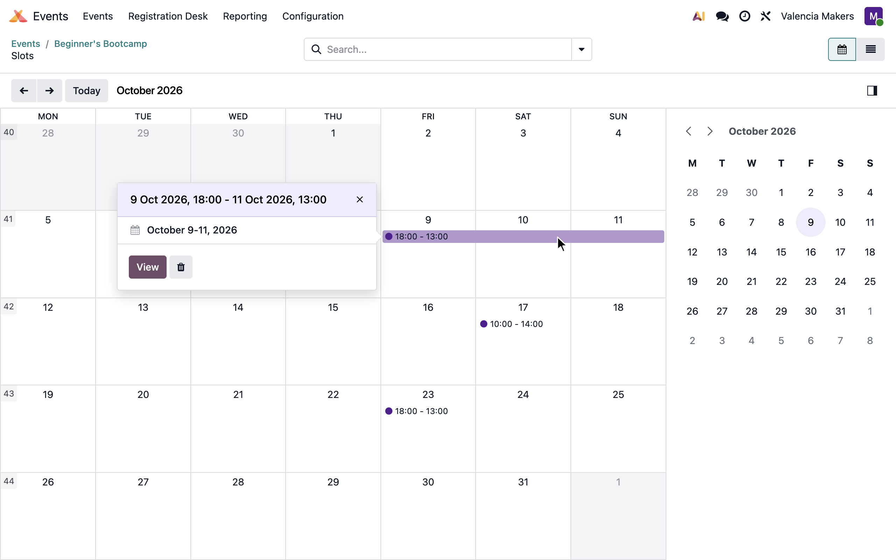
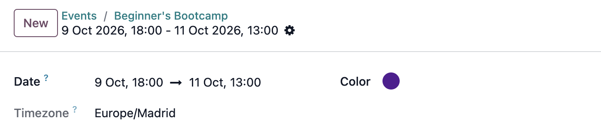

In standard Odoo, an event slot must start and end on the same day, so it can never span more than one. Multi-Day Event Slots gives each slot a start date and an end date, so it can span as many days as it needs.
Using the Events app? It includes the website, so use Multi-Day Event Slots (Website) instead: it includes this module, and also displays the start and end dates to website visitors when they select a slot.

The slots calendar view displays multi-day slots spanning all days.
An attendee's registration ends when the slot does, so calendar links include all days.
Mail scheduled for after the event is sent once the slot ends.
Move a multi-day slot to another start date and the end date moves with it.
The event slot form uses a single start-to-end range, the same way the event form does. Slots are configured and displayed in the event's timezone, as they currently are in Odoo. Existing slots are left unchanged until you give them a later end date.
This module only requires Events Organization, the backend part of the Events app, and changes nothing on the website on its own.